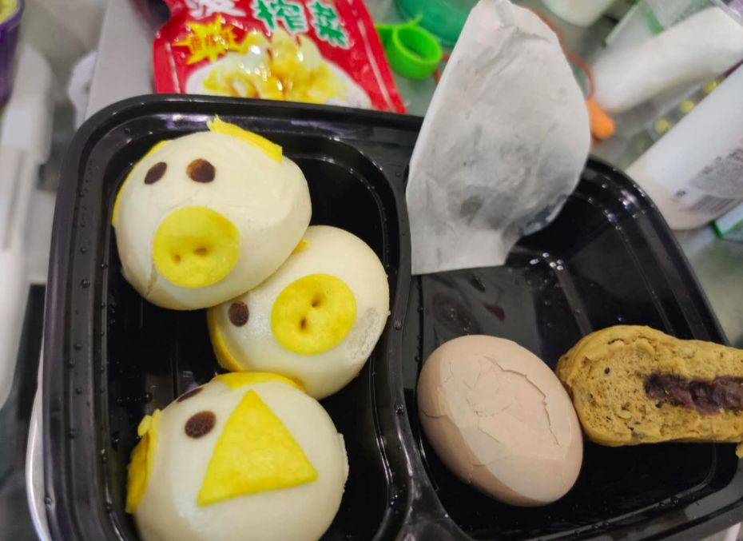

住在方舱的摄影师：这个照片今天在人民日报的首页登了
原文链接 备份链接 一场疫情，让小余一家分离三地。但他依旧认为，自己是不幸的人中，幸运的那个。作为婚纱摄影师的他，如今在方舱里给大家拍照片。他很高兴，“在这样很苦的事里，大家都能表现出一种乐观”。 文 | 吴美芬 小余今年30岁，是一位婚 …
撰文：杨媛
2020 年 1 月 23 号凌晨 1：30，一架从武汉天河机场出发的客机飞抵杭州萧山机场，落地半个小时后，武汉宣布自 1 月 23 号上午 10 时起封城。
那是当天最晚的一班飞机，也是林玲最后的离汉机会。
「纯粹是第六感」她说。头一天晚上，在上海虹桥火车站候车室，林玲将原定于 1 月 24 号上午返回上海的机票改签，不安的心绪瞬间平复。
现在回想起来，她仍为作了这个正确的决定而庆幸。与她一起逃出武汉的，还有 3 岁的女儿。林玲无法想象女儿感染新冠肺炎的后果，因为身后的家人，几乎「全军覆没」。
自 1 月 21 号起，滞留在武汉的家人陆续出现症状，而后，爸爸、妈妈、弟弟、外公、外婆、奶奶、大姨，大姨夫、表弟一家 9 口均被感染。
这是一个典型的聚集性感染样本，瘟疫掠过这个三代同堂的家庭，留下的不止是血液中的抗体。他们惊慌、后怕、庆幸，最终用尽力气，重新建构起信心。
在人满为患的瘟疫的世界里，他们是病人，更是家人。将镜头对准每一个家庭成员，以下是他们的自述。
林玲：住进医院之前，任何环节都可能出差错
最开始有症状的是奶奶，奶奶家住华南海鲜市场附近，我回武汉的几天前，她一直在武汉市新华医院（湖北省中西医结合医院）打针。1 月 21 号当天拍了肺部 CT ，显示有病灶，也是在那天，新华医院接到通知，不再接收门诊打针的病人，爸爸便开车送她去三环外的私立医院打针。
他开车送奶奶回家后，把车停在了距离华南海鲜市场几百米的汉口火车站，因为我和弟弟到武汉都凌晨了，公交停运，他要把车留给我们，然后自己坐公交车回到东西湖区的家里。结果爸爸 22 当天晚上就发烧了。
我 1 月 22 号凌晨 3 点到武汉，当天下午 11 点就离开了，在武汉的时间不到 24 小时。这段时间里，我开车去汉口北取了在高铁上买的 600 个 N95 口罩，分给家里人，晚上和外婆家的亲戚吃了一顿年饭。小姨、大姨一家、外公外婆三户人住在一个小区，我们家住附近小区，一家人挨得很近。
1 月 30 号下午，外婆的肺部 CT 结果出来了，显示有病灶，晚上，爸爸、妈妈、大姨，外公都去查了，结果跟外婆一样，全是「双肺斑片状及磨玻璃高密度影」。
也是在 1 月 30 号，奶奶浑身乏力好几天了，但因为一直没有发烧，所以没有确诊，也没有接受正规的治疗。医生说不发烧就不是新冠肺炎，医院不接收，但此前的 5 天，她都无法进食，到医院时已经脱水、意识模糊。求了半天，医生才同意给她打营养针。
2 月 8 号、10 号、11 号，我们自费给奶奶做了三次核酸，全都是阴性。红十字医院的医生给我们建议，说我们有 CT 诊断书，可以申请去酒店隔离。
我到处打电话，社区不收，叔叔甚至把奶奶扔在社区门口，假装走掉，发现没人管，两个小时后又把她接走了。
直到 2 月 18 号，奶奶才住上院。
家人的住院事宜几乎靠我安排。爸爸 2 月 8 号被强制出院那一次，没有社区的隔离点愿意接收，打到社区，社区说没办法，让我找街道，我又打到街道，街道让我打到区里面，区里面又让我打到街道……
最后怎么解决的，我直接给街道的一个书记打电话，然后就像开绿一样，立马找到隔离点了。住进去后的第 3 天，社区还打电话来问，他们都不知道爸爸已经住进去了。
类似的过程经历了很多次，奶奶住院、外公外婆住院出院……都是我远程安排。因为家里人不是在隔离点就是医院。
这期间心一直悬着，只有等家人住进医院了，我才睡得着。没住进医院之前，中间任何环节都很有可能出差错。
爸爸：比起目睹死亡，无医院收治才是更大的绝望
我所在的公司距离华南海鲜市场只有两三公里。上下班都要经过那里，以前是乘公汽加地铁上下班，元旦之后改自驾，因为听说华南海鲜市场出现了类似 SARS 的病例。
1 月 21 号下午，领导召集全公司职工开了动员会，说现在政策是「内紧外松」，让我们注意防护。我当天的状态还很好，谁知第二天就发烧了。
1 月 22 号，我儿子女儿刚好都从上海回来，当晚全家人聚会吃年饭，我一个人没有去。去楼下的诊所量了一下体温，37.5℃，医生开了一盒连花清瘟颗粒，我配合阿莫西林吃的，第二天感觉好一些，自认为烧退了。
而后是头疼，我本身就有头疼的毛病，以前睡一觉就好了，所以那次也以为是毛病犯了。后来的 10 天里，断断续续地头疼，持续的浑身无力。
我们春节期间都不兴看病的，因为不吉利。所以直到 1 月 31 号，大年初七，我才去的东西湖区人民医院，当时都快撑不住了。医院发热门诊人山人海，分诊台已经不叫号了，患者排的挨挨挤挤。下午 4 点去的医院，排队检查完，到家都晚上 11 点了。
我当时头痛欲裂，没心思关心其他事，排队、检查、取药都是老婆跑上跑下安排。血常规和胸部 CT 片出来后，医生建议我住院，但是东西湖区人民医院没有床位，医生开了三剂消炎针，让我每天来门诊打针。
那时候，我妈妈，岳父岳母都已经发烧了。此前的几天，老婆带着我妈在东西湖区人民医院和湖北省中西医结合医院打了几天的针了。没办法，整个武汉市一床难求，家里的 3 个老人都还没住上院，我更没法住院。
在东西湖区人民医院发热门诊打了两天消炎针后，接到女儿的通知，说青山普仁医院有床位，我赶忙让弟弟开车送我去了。
2 月 2 号，我住进了武汉普仁医院感染科一间 6 人病房。一进医院，我立马就踏实了。无论如何，有医生救我了。
6 床是 5 号早上走的，那是一位 70 岁左右的女性，我住 1 床，她的斜对角，那天我早起洗漱路过 6 床，看到被白床单盖住的身体，心里一惊。
没过一会，4 个穿防护服的医护拿着帆布袋进来了，两人牵袋子，两人抬尸体，装进袋子，拉链一拉抬走了。那过程迅速安静，我和同病房的另外 4 个病友都心照不宣地别过脸去，不忍心看。在这场疫情中，那是我第一次近距离地感受到死亡。后来又听说楼上的某某某去世了，我怕被负面情绪打扰，不敢多想。
医生每天查房都要给我们打气，说这个病没有特效药，最主要是要心态好，心理因素占到 70%。医生说的话我记在心里，尽量不去想那些增加心里负担的事。
住了几天，胸部 CT 显示病灶没有恶化，但也没有好转，医生建议我自己买些丙种球蛋白，我托身在上海的女儿找渠道买了 12 支，又找弟弟开车送来医院。丙种求球蛋白需要自费，600 元一支，每次打 4 支，从 2 月 5 号开始打，打到第 3 天，也就是 2 月 7 号，刚刚打完，也正是那天，我得知老婆和儿子也都确诊了，那一刻真的是快承受不住了。

家人群
图源：受访者供
但我一直有个信念，不要拖累生你的人和你生的人。没办法，我自己这种情况，只能把自己保重好，才能不给家人增加负担。
2 月 8 号上午，主任来看我，带来了一个好消息和一个坏消息。好消息是，丙种球蛋白起作用了，我肺部的病灶终于开始吸收了，没等我高兴，主任说我不能继续住这里了，因为当天武汉市卫健委新出台了个政策，不允许新冠肺炎患者跨区治疗。
一同被要求出院的，还有 3 床，她是武昌区的，武昌区挨着青山区，接到通知后就自己走了，至于走到隔离点去了还是去医院了，我不清楚。
而我是东西湖区的居民，两个区相距 20 多公里。
医生让我找居住地的社区安排转院事宜，我打电话到居住地——东西湖区吴家山社区，对方说他们安排不了，让我找普仁医院安排，社区工作人员还给我出主意，让我不要出院，说赖着不走医院也不可能赶我走。
但我接到主任的通知后，医院就把我的药都停了。包括一早一晚的中药，抗病毒药物和激素。我实在没办法才告诉了上海的女儿。
2 月 8 号晚，女儿来电话让我明天中午之前赶到吴家山东方宾馆，也就是居住地的社区隔离点。第二天一早，弟弟冒着被管制的风险开车来接我，因为没有通行证，一旦被查，车子很可能被扣押。
2 月 9 号，我终于住进了社区隔离点。但隔离点只提供中药，一早一晚各一袋。说实话，那几天还是比较焦虑的。
我在社区隔离点住了 4 天，这 4 天，武汉变化非常大，省委书记，市委书记都换了。我最终没有按照那条政策住在所属地区的定点医院，而是去了武汉市第一人民医院。
2 月 13 号上午，我随救护车进了武汉市人民医院感染科 18 病区，一间房有两个病床，我住 1 床，住进去的当天，比我先一天住院的 2 床就告诉我，住我这张床的上一个病人当天早上才去世，是一个 31 岁的博士。
听到这话我压力太大了，心想这个病死的人不都是老年人，有基础疾病的吗？这么年轻的小孩都去世了？
但我转而告诫自己，一定要活着！这个小孩这么年轻就去世了，也许他的阳寿会给我，让我多活几年，所以我一定会好！
3 天后，2 床的情况急转直接下，呼吸不好，吸氧机也上了，天天咳嗽，有一晚咳了一整夜，第二天清早，看见他床边满地的纸，大小便都失禁了。我感到恐惧，要求医生给我换病房，等床位松散一些了，护士立马连着床将我推进了隔壁病房。
换了病房的第二天，我听打扫卫生的人说 2 床早上也走了。
妈妈：我在方舱跳广场舞
2 月 2 号是我印象最深的一天，当天上午，我把丈夫送进了青山普仁医院。而 80 岁的父亲和 76 岁的母亲床位都还没有着落。
要住院，必须先进社区的隔离点等床位，晚上 8 点左右，我让儿子开车送父母到隔离点。等待了好几个小时，晚上 11 点左右，我们终于进了房间，这几个小时里，身在上海的女儿一直在给社区打电话，希望可以让老两口住一间房。
我母亲失聪 10 年了，戴上助听器还得配合说话者的嘴型才能勉强明白对方的意思，在那之前的一周时间里，她几乎没有进食，只有少量的饮水。父亲的病情也很严重。
安顿好父母，准备离开的时候，母亲望着我哭，父亲也被惹得流泪，我知道他们对陌生的环境感到恐惧，也担心我。
回去的路上，接到社区的电话，说可以安排我父母住进东西湖区人民医院，问我现在住院还是明天一早去。我想现在不去，明天床位还在不在都不一定，便赶忙返回隔离点去接他们。
把父母送到医院后，我也住进了隔离点，到宾馆房间时，已经是 2 月 3 号凌晨 1 点半。一躺下我就结结实实哭了一场，很释放。因为丈夫、父母都住院了，心里的石头终于放下了。那晚睡得出奇地好，把前段日子缺的觉都补回来了。
其实家里人不知道的是，此前在医院给父亲拍片子的时候，我自己也查了一下，肺部感染了，不过还好是轻症。2 月 7 号在隔离点检查核酸为阳性，我第二天就被送进了武汉客厅方舱。
这里分 ABCD 舱，我住在 A 舱，一个舱里又分区，我所在的区共有 20 张病床。床与床之间相隔一米左右。
我随身携带了一个装满酒精的小喷壶，一进舱就给每一张床都喷了酒精。刚开始，舱里的病友都不怎么说话，气氛蛮压抑，我一去大家都觉得我挺热情。

妈妈在方舱医院的床位
图源：受访者供
第二天一早，我就在床边放歌跳舞，歌名叫《一晃就老了》很欢快，是我平时跳广场舞时喜欢的曲目。我站在床边跳，也号召大家跟我一起跳，慢慢的，稀稀拉拉有人跟我一起做动作。坚持了几天，舱里的病友觉得我很活泼，给我起了跟外号叫「花姑」。
后来舱里来了个即将高考的学生，我们怕打扰她学习，就到外面去跳，其他舱有病友跟我们一起跳，也有护士和医生加入。运动的种类变多了，广场舞、广播体操、太极。气氛活跃起来。

方舱舞者
图源：受访者供
2 月 11 号，我女儿打电话说儿子也确诊了，下午就要来武汉客厅方舱。那天下午我老早就跑到门口等他，人太多了，等了半天也没等到，后来发现他已经住进去了。等儿子收拾好来 A 舱看我的时候，看他脸色不太好，我表面没反应，心里泪汪汪的。
那晚我一夜没睡，第二天一早心里闷得慌，就绕着我们那个区慢跑了一圈，感觉好多了。
后来我得知治愈的新冠肺炎患者可以捐献血浆，我准备去当志愿者。
弟弟：住过 3 家医院、查了 5 次 CT、做了 10 次核酸
我今年 23 岁，从 2 月 24 号第一次低烧到 3 月 14 号从雷神山出院。这期间我一共住过 3 家医院、查了 5 次 CT、做了 10 次核酸。除了最后两次核酸检测结果为阴性外，前 8 次中只有 1 次是阴性。
我几乎没有任何症状，肺部 CT 的磨玻璃影非常小，医生说可以忽略不计。2 月 7 号进社区隔离点之前，我大部分时间充当了家里人的司机，空旷的街道让我感到陌生又新奇。

武汉街头
图源：受访者供
2 月 12 号，我住进武汉客厅方舱医院。在那之前，妈妈已经住进去了，她住 A 舱，我住 B 舱。妈妈很外向，属于典型的大妈，我知道她在跳舞，偶尔路过的时候会去看一眼，但无意加入。
在方舱的时候，天天喝中药，早晚各一袋，开始是 4 号方，后来改成 2 号方，一个写的是「康复期」，一个写的是「恢复期」，一个味道淡一点，一个味道重一点。
在方舱时，妈妈会帮我热一下，督促我喝完。后来等我转去中南医院再转到雷神山，就逐渐不喝了，因为越来越苦……

方舱的早饭
图源：受访者供
方舱的构造像一只蜘蛛，护士站是最中间的蛛身，排成列的床位是蜘蛛的脚。那天，当听到护士站的广播报 683 号床的时候，我是比较崩溃的，因为那意味着上一次的核酸检测呈阳性。那是我第 4 次阳性，看到隔壁床那位 60 岁的爹爹都可以出院了，我有一种努力没有却没有得到回报的感觉。
但沮丧到此为止，当又连续两次阳性，甚至第 7 次出现阴性的时候，我内心都毫无波澜。
从方舱转到中南医院的时候，妈妈比较担心，我把医生对我说的话告诉她：有的患者肺部感染非常严重，但 CT 是阴性，这种患者是害自己，不害别人，而我正好相反，害别人不害自己。我还把伤寒玛丽的故事讲给她听，说我就是故事中那个女佣。知道我问题不大，她多少放心一些。

武汉客厅方舱
图源：受访者供
大姨：如果不进金银潭，我可能没命了
1 月 22 号我就发烧了，当时武汉封城，家里没车，就天天骑我爸爸的电瓶车去附近的小诊所打针。打了几天针感觉越来越严重，诊所的医生让我去大医院看看。
1 月 30，我被姐姐带去东西湖区人民医院拍片子。看了肺部 CT，医生说我的情况非常严重，传染性很强，说话的时候都尽量别过脸去，不让我对着他，我自己还好，但诊室门口的姐姐脸都吓白了。
当时武汉的床位太紧张，我父母还没住上院，上海的侄女在给我父母联系床位，妹妹也为这事跑了几趟社区，姐夫也感染了，姐姐两头跑着照顾父母和姐夫。
在东西湖区发热门诊打了两天针，2 月 1 号，我收到通知可以去金银潭医院，马上叫侄子开车送我去了。
刚入院我就戴上了吸氧机，在金银潭的前几天，我呼吸非常差，气喘、乏力，不能进食，但是我逼着自己吃，食物呕出来又咽下去。
戴着吸氧机夜里根本无法入睡，鼻腔里都是血，我让医生开点镇定的药，医生说最好能自己睡。我感觉坐起来呼吸要好一点，前几天就这样半坐着睡的。
金银潭里没有中药喝，药物是阿比多尔、柯立芝和丙种球蛋白。好在，我的身体一直在好转，2 月 1 号入院的，2 月 14 号就出院回家了。
回家后，听到老公说，刚住院的时候医生说我双肺都白了，他哭了好几次，没敢告诉我，我听后挺感动的。在医院的时候，我隐约知道老公也感染了，是轻症，出院后才知道 22 岁的儿子也感染了，看肺部 CT 诊断书居然比老公还严重。
我住院的那半个月里，因为没有核酸确诊，他们都在金银潭医院自费开了药，在家里隔离吃药。幸运的是，他们最近的核酸检测都为阴性。
文中林玲为化名

原文链接 备份链接 一场疫情，让小余一家分离三地。但他依旧认为，自己是不幸的人中，幸运的那个。作为婚纱摄影师的他，如今在方舱里给大家拍照片。他很高兴，“在这样很苦的事里，大家都能表现出一种乐观”。 文 | 吴美芬 小余今年30岁，是一位婚 …
原文链接 备份链接 伴随着火神山、雷神山医院开始收治病人，15家方舱医院陆续启动， 各省医疗队开赴武汉，武汉所有确诊患者与疑似病例都将“应收尽收”。 在人类抗击疫病的历史上，“武汉会战”已成为一场史无前例的超级行动 图/新华、中新 武汉 …
原文链接 备份链接 早春的武汉春风拂面，这两天接到爸妈打来的电话，询问我的近况。我告诉他们我过得好着呢：吃着大餐、住着五星级的酒店。其实，我特别想念妈妈蒸的馒头，就算只就着大蒜，我也能吃两个碗大的馍馍。 口述 | 毛 平 整理 | 沈 …
原文链接 备份链接 凤凰新闻客户端 凤凰网在人间工作室出品 打开凤凰新闻客户端，搜索「在人间」并关注 我是河南人，在深圳读研究生。疫情期间，我和好友筱筱在一个机构做远程志愿工作，负责收集求助信息，核实后，再由机构统一上报有关部门，安排收 …
原文链接 备份链接 访谈对象：确诊患者/退休教师 采访/整理：画天 访谈时间：2月15日晚上 要活命，必须吃 我住在洪山区狮子山街道，先是在我们华中农业大学的医院拍了胸片，医生怀疑我肺部有问题，让我去外面的医院做CT。我问社区能不能接送， …